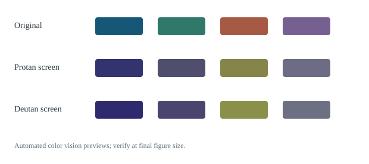
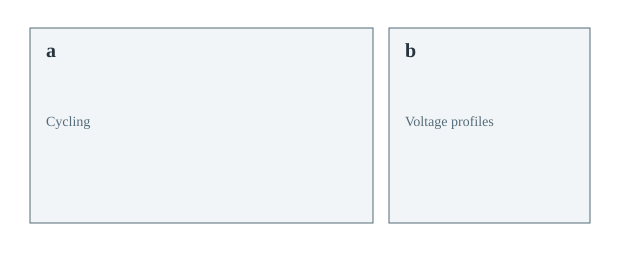

配色 · 初步收录
Ocean Electrolyte
深蓝、青绿和暖棕，适合白底下的两到四条电化学曲线。
作者：BatteryReviewForge maintainers · CC0-1.0 · v1.0.0
下载资源文件 ↓先从可检查的配色和布局开始。公开投稿要经过审核，使用时锁定版本，重画不会悄悄变样。
Battery Commons · 第一阶段
当前只有少量起步资源。“初步收录”只表示资源文件和格式已检查，科学适用性仍需人工复核；预览中的色觉模拟也只是自动筛查。

深蓝、青绿和暖棕，适合白底下的两到四条电化学曲线。
作者：BatteryReviewForge maintainers · CC0-1.0 · v1.0.0
下载资源文件 ↓
左侧放长循环，右侧放同一实验的选定圈数电压曲线。
作者：BatteryReviewForge maintainers · CC0-1.0 · v1.0.0
下载资源文件 ↓普通绘图仍使用安装包内稳定的六套风格。只有你主动提出，AI 软件才会查看社区资源，并把所选版本记录到图的来源说明里。
提交使用公开 GitHub Issue，需要登录；不要上传未发表数据或没有公开许可的论文图片。未来会继续改进提交入口。
将来会分别记录收藏、有用反馈、自动检查和领域审核。受欢迎的颜色不一定适合最终字号或色觉差异。资源从初步收录到人工复核，再到经过检查，最后才可能进入内置稳定库；当前资源尚未完成这些检查。
每项资源都写作者、许可、版本和校验值。技能不会自动运行社区代码，也不会把用户投稿叫作“训练模型”。未来若考虑模型训练，需要投稿人单独选择同意，默认关闭。
名单来自 CONTRIBUTORS.yaml。科学审核、文档与代码贡献分开展示；支持项目不自动获得贡献者或论文作者身份。